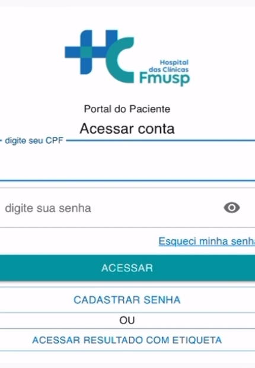
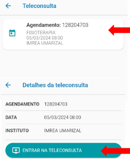

ℹ️ Explicando nosso site
Nosso site tem como objetivo conscientizar os pacientes sobre a importância de comparecer às teleconsultas online.
A alta taxa de faltas compromete o andamento dos tratamentos e a organização do hospital.
Entre os principais motivos das ausências estão o esquecimento do horário, dificuldades com tecnologia, falta de acesso à internet, desvalorização das consultas virtuais e imprevistos pessoais.
Aqui, você encontrará dicas e orientações para evitar essas situações e garantir um atendimento mais eficiente para todos.
📲 Como fazer sua consulta pelo celular (teleconsulta)
ℹ️ O que é teleconsulta?
É uma consulta com o médico pelo celular, tablet ou computador. Você não precisa sair de casa. Você e o médico conversam por vídeo.
Fizemos este passo a passo para te ajudar, de forma simples, a acessar sua consulta online com segurança e sem complicações.
✅ O que você vai precisar:
- 📱 Um celular com internet
- 🧾 Seu CPF
- 🔊 Câmera e microfone funcionando
- 🕑 Estar disponível no dia e horário marcado
✳️ 1. Baixe o aplicativo
Vá até a loja de aplicativos do seu celular:
Se for Android: Play Store
Se for iPhone: App Store
Procure por Portal do Paciente HC e instale o aplicativo.
🆕 2. Cadastre sua senha (primeiro acesso)
- Abra o aplicativo e toque em "Cadastrar Senha"
- Digite seu CPF e toque em "Localizar Paciente"
- Preencha seus dados (nome, telefone, e-mail...)
- Crie uma senha fácil de lembrar
- Volte para a tela inicial, digite o CPF e a senha e toque em "Acessar"
📅 3. Acesse sua consulta
- No menu, toque em "Teleconsultas"
- Leia e aceite o termo de autorização
- Toque duas vezes no nome da sua consulta
- Depois, toque em "Entrar na Teleconsulta"
- Ative o microfone e a câmera
- Aguarde o profissional entrar na sala
💡 Dicas importantes
Fique em um local silencioso e com boa internet
Se não souber mexer, peça ajuda a alguém de confiança
Se der erro ou cair a conexão, tente novamente ou entre em contato com o hospital
A consulta é gratuita e feita com toda a segurança
🧡 Lembre-se Você não está sozinho. A equipe do IMREA quer te ajudar a cuidar da sua saúde, mesmo à distância.
💖 Nossa missão é te acolher
Sabemos que o mundo digital pode ser novo para você. Por isso, fizemos tudo com letras grandes, linguagem simples e apoio humano sempre disponível. Se você sentir dificuldade, não se preocupe: nossa equipe está pronta para te ajudar em cada etapa.
📋 Funcionalidades do aplicativo
📅 Você pode consultar a data, horário e link da sua próxima teleconsulta diretamente no aplicativo.
✅ É possível confirmar sua presença na consulta de forma simples e rápida.
🎥 No dia e horário marcados, você acessa diretamente sua consulta online com apenas um clique.
ℹ️ O aplicativo oferece informações claras e objetivas sobre como funciona a teleconsulta, para que você se sinta mais seguro.
🆘 Se tiver dificuldades, você pode receber suporte personalizado da nossa equipe.
✅ Critérios para participar da teleconsulta
✔️ Você precisa ter uma conexão de internet estável durante a consulta.
✔️ É necessário utilizar um dispositivo que tenha câmera e microfone funcionando corretamente.
✔️ É importante que você se sinta confortável em compartilhar informações pessoais durante a chamada.
❌ A teleconsulta não é recomendada para quem possui condições médicas que exigem atendimento presencial imediato.
🆘 Precisa de ajuda?
📱 Se você tem dificuldade em usar o celular, disponibilizamos um passo a passo fácil para te orientar.
🌐 Caso não tenha internet, sugerimos buscar locais com Wi-Fi gratuito, como postos de saúde, bibliotecas ou centros comunitários.
🖥️ Se não possui celular ou computador, você pode pedir ajuda a familiares, amigos ou utilizar espaços públicos que oferecem computadores.
⏰ Se costuma esquecer datas, uma boa dica é anotar em um papel e colar na geladeira ou ativar um alarme no celular.
🤝 Caso você esteja em situação de vulnerabilidade social, informe nossa equipe. Juntos, buscaremos uma alternativa, que pode ser até mesmo o atendimento presencial.